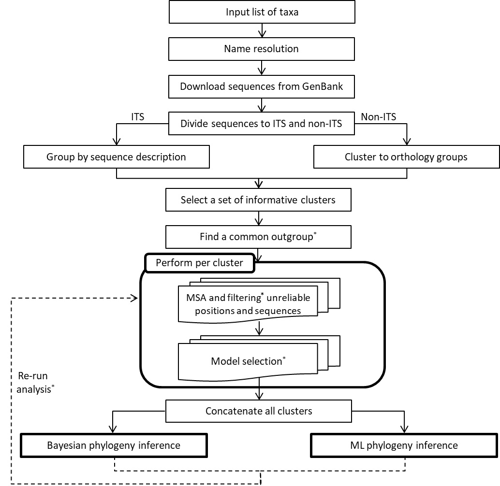

The general pipeline is outlined in the following scheme and is briefly described below. Further details can be found in the manuscript.

* Asterisk indicates an optional stage, depending on user selection.
(1)
Input.
The sole input requirement for OneTwoTree is a list of taxa names to be analyzed.
Alternatively, NCBI TaxID (
see explanation here),
or a mixture of TaxId and taxa names can be given as input. To avoid server overload we limit jobs to a maximum of 10,000 taxa per analysis. Please contact us
(evolseq@post.tau.ac.il)
if you wish to conduct such an analysis.
(2)
Name resolution.
OneTwoTree offers two types of name resolution processes that can be used to validate the list of taxa names provided by the user and to ensure consistent taxonomic reference across different databases:
a. Fuzzy matching. Choosing this option will correct for probable misspellings as well as
differences in naming conventions (e.g., the replacement of Linaria peloponnesica with Linaria peloponnesiaca)
in comparison to the reference taxonomic database.
b. Full name resolution. Choosing this option will perform fuzzy matching and additionally will match synonymous taxa names to their accepted ones (e.g., the replacement of Oenothera elata subsp.
hookeri with Oenothera elata subsp. elata).
Both processes make use of the Taxonome tool (Kluyver & Osborne 2013). The underlying taxonomic database for names is user-specified, with NCBI Taxonomy being the default (Federhen 2011).
Another database is The Plant List (
V1.1;).We are currently working on adding the Catalogue of Life (Roskov Y., et al.2017) as an additional naming database.
Using the fuzzy matching option, any sequence that shares the same TaxID as the input taxon will be retrieved, regardless if it is an accepted name or a synonym. In the second option,
sequences belonging to any TaxID of the synonymy group (i.e., both the accepted name and all its synonyms) are retrieved and grouped under the TaxID of the accepted name. We note that using this option,
two names provided by the user could be combined into a single TaxID if, for example, one is a synonymy of the other. When using non-NCBI naming database,
sequences are retrieved only if their name is assigned as a "scientific name" in NCBI.
(3)
Sequence retrieval.
To enble efficient sequence data retrieval and rapid update upon new GenBank release, a local depository of NCBI GenBank (Benson et al. 2013)
was downloaded for six Eukarya divisions including mammals (MAM), rodents (ROD), primates (PRI), plants (PLN), vertebrates (VRT), and invertebrates (INV).
All sequences are limited to be no longer than 100,000bp. Sequences with unknown TaxID were eliminated from the database. To further reduce data redundancy,
sequences of the same TaxID sharing >98% identity were filtered using CD-hit (Li & Godzik 2006), leaving the longest as representative. TaxID with more than 1,000 sequences are separated from the pipeline (do not undergo the clustering process as detailed below; see (4) Clustering)
Given an input list of taxa names, all DNA sequences available in the local sequence repository are retrieved for the requested taxa.
By default, the analysis is performed at the species level. Optionally, users can choose to include (1) hybrids (e.g., Iris brevicaulis x Iris fulva)
(2) intraspecific variants (e.g., Iris iberica subsp. elegantissima, or Iris kirkwoodiae var. macrotepala) or (3) open nomenclature
(e.g., sp. aff., cf. etc.; Iris bulleyana f. alba). Regardless of any previous selection, users can request to unite all taxa below the species-level
with their progenitor species into a single tip, whose name matches that of the binomial species. Notably, this step is performed following the sequence
retrieval part and will thus not result in the retrieval of any additional accessions. Thus, for example, in case a subspecies is specified in the input list,
but the species itself is missing, sequences will be retrieved only for the subspecies. The name on the phylogeny, however, will follow the merging command and
will be that of the binomial species. In case a higher-ranked taxon that encompasses multiple species (e.g., a genus name) is specified, all circumscribed species
are included in the analysis as separate entities and the various filters described above can be applied.
An additional filtering step allows users to specify the genome type from which sequences will be retrieved (any combination of the following):
a.Nuclear
b.Mitochondria
c.Chloroplast
We note that this filtering is applied after the clustering process (see below) which can result in a mixture of genome types (e.g., a chloroplast sequence that is clustered with nuclear sequences).
The genome type of each cluster is defined according to the majority of the sequences within it.
(4)
Clustering.
Sequences are clustered into orthologous groups using several optional tools with OrthoMCL (Li et al. 2003) being the default.
To avoid cases where a long sequence (e.g., the whole mitochondrial genome) is mapped to multiple clusters, the orthoMCL pipeline was adjusted such that the aligned
region between all pairs obtained by BLAST all-vs-all is at least 50% of the size of either sequence. This overlap ratio threshold can be altered by the user.
Users can additionally control the granularity of the resulting clusters by modifying the inflation parameter of orthoMCL (higher inflation index will result in tighter clusters; Li et al. 2003).
In case multiple accessions per TaxID are found in a single cluster, a representative accession is selected by performing a BLAST all-vs-all among all of these accessions and
choosing the one with the highest average bitscore. Clusters with exceedingly low taxon coverage (i.e., below 5 taxa per cluster) are filtered from subsequent steps.
In case of TaxID with more than 1,000 sequences, this TaxID does not undergo the regular clustering process, i.e., after the clustering has been performed, the pipeline checks whether any of the >1,000 sequences
shares high similarity (based on blast Bitscore) with the clusters' sequence representative. If it does, these candidate sequences are added to the cluster.
Sequences belonging to the Internal Transcribed Spacer (ITS) region are clustered differently. The two ITS sequences, ITS1 and ITS2, are DNA regions located between structural ribosomal RNAs,
and are one of the most widely-used phylogenetic markers. As these two distinct regions share high sequence similarity, clustering tools tend to mistakenly group them together,
which could result in erroneous alignments. Therefore, OneTwoTree identifies ITS sequences based on their GenBank sequence descriptions using keyword matching.
ITS sequences are then classified to three non-overlapping groups: (1) sequences containing only ITS1, (2) sequences containing only ITS2, and (3) sequences containing both.
The combined group (no. 3) should contain at least 5 taxa to be included, in case of insufficient taxa coverage, each of the other groups (no.1 and no. 2) should maintain the same threshold
in order for an ITS cluster to be included. These sequences are then aligned using a 2-step alignment strategy: First, only the group of sequences containing both regions is aligned,
thereby creating a backbone alignment. Then, ITS1 and ITS2 sequences are iteratively added to this backbone alignment using the --add-fragments option of MAFFT (Katoh & Standley 2013).
A header is given to each cluster based on the representative sequence of each cluster (this sequence is chosen based on a BLAST all-vs-all among all sequences within the cluster).
The name will be assigned according to the list of genes the representative accession contains (as appears under the 'gene' feature in the GenBank file), and if missing, according to the description field.
(5)
Outgroup.
Users can choose one out of three options:
a. None – the analysis will be performed without assigning any of the taxa as outgroup.
b. User defined – the user can specify one of the input taxa to serve as the outgroup.
c. Automatic selection – selecting a single outgroup automatically by the pipeline. Note that an automatic outgroup selection substantially
increases running times compared to the two other options.
In case users choose the automatic outgroup selection the following steps are being executed: (1) Identifying a list of potential outgroup sequences for each cluster,
and (2) choosing a single outgroup that is compatible with the largest number of clusters. In the first step, for each cluster identified in the clustering step,
a representative sequence is selected (this sequence is selected by executing a BLAST all-vs-all among all sequences within the cluster and choosing the one with the highest average bitscore).
This sequence is then used as the query in a subsequent BLAST search against the local sequence repository to locate potential outgroup sequences. The results of this BLAST search are filtered as follows:
(a) the length of the outgroup sequence is at most twice that of the query sequence and at least half of its length; (b) the BLAST bitscore of a potential outgroup sequence should be lower
than the bitscores received by all sequences belonging to the ingroup taxa; this condition verifies that the outgroup sequences are not nested within the ingroup taxa. Finally,
given the list of at most 250 potential outgroup sequences per cluster, a single outgroup species is selected as the one with the highest sequence coverage
(i.e., the coverage of each potential outgroup species is the sum of the sequence lengths of the clusters it corresponds to, weighted by the number of sequences in each cluster).
(6)
Multiple sequence alignment (MSA).
Alignment for each cluster is performed using
MAFFT v6.864b (Katoh & Standley 2013) or
Clustal Omega (Sievers et al. 2011). An MSA filtering process which removes poorly aligned
sequences or positions is applied by default using
trimAl v1.2rev59 (Capella-Gutiérrez et al. 2009;
in this option user can specify the fraction of sequences with a gap allowed). Users can optionally alter the tool used and apply this process using
GUIDANCE v1.41 (Penn, O. et al., 2010; removing sequences and positions with lower reliability scores than defined; using this option might slow OneTwoTree's performance significantly)
or
Gblocks v0.91b (Castresana, J., 2000). Once the MSAs of all clusters are computed, they are concatenated to form a single supermatrix.
To reduce excessive computation time, the length of the final MSA is restricted to be no longer than 20,000 positions; the length of each cluster is represented by the median length of its sequences.
In case the concatenation of all available clusters exceeds this limit, clusters are added iteratively such that at each step taxon coverage is maximized, until the MSA length threshold is reached.
(7)
Phylogenetic reconstruction.
(7.1) Tool: According to user preference, a phylogenetic reconstruction procedure is performed using
RAxML v8.2.4
(Stamatakis 2014) or
ExaML v3.0.17 (Kozlov et al. 2015) for Maximum Likelihood (ML) inference,
or MrBayes v3.2.2 (Ronquist et al. 2012) for Bayesian inference:
a. RAxML. Possible substitution models include GTRCAT, GTRGAMMA, GTRCATI, GTRGAMMAI.
Users can choose to add a rapid bootstrap estimation and specify the number of replicates. Choosing this option will substantially increase the running time.
b. ExaML. Possible substitution models include the PSR and GAMMA.
These are equivalent of the GTRCAT and GTRGAMMA models available in RAxML, respectively. Users can choose to add a rapid bootstrap estimation and specify the number of replicates.
Choosing this option will substantially increase the running time.
c.MrBayes. User can choose an automatic selection of the best-fitted model for each locus using JmodelTest (Darriba et al. 2012).
Additionally, several options for a clock model (unconstrained, strict, or relaxed) are supported.
All models excluding the unconstrained model result in trees that are ultrametric. Other parameters that can be modified include number of MCMC generations,
samplingfrequency, number of chains, burnin fraction, and frequency of checkpoints.
(7.2) Tree type: Users can obtain a single phylogenetic tree inferred from the multi-loci concatenated MSA (͞supermatrix tree͟) or choose to infer one phylogeny per each of the available loci.
(7.3) Divergence time estimation: Divergence time estimation (i.e., estimating branch lengths in units that are proportional to time) is available for rooted phylogenies inferred under both Bayesian and ML approaches.
Choosing this option will result in trees that are ultrametric. Under the Bayesian framework, users should choose the strict model or one of the relaxed clock models.
Under the ML framework, divergence time estimation is performed either by PLL-DPPDIV (Flouri & Stamatakis 2012; Heath et al. 2012) or treePL (Smith & O’Meara 2012).
To perform time estimates, users should provide a set of calibration points (
see nodal constraints below).
In case none are provided, the tree will be calibrated relatively to a root age of 1. Note, that when using PLL-DPPDIV the outcome is a distribution of trees.
Thus, TreeAnnotator, which is part of the BEAST package (Drummond & Rambaut 2007), is used to summarize these multiple trees into a single tree.
(7.4) Constrained trees:
a. Topological constraints: In case of prior knowledge regarding the relationship between the taxa in question, one can apply a topological constraint by defining certain splits
in the resulting phylogeny. Implemented both for ML and Bayesian inferences, users can add a topological constraint tree, in a NEWICK format (e.g.,: ((A,B),(C,D)); branch lengths are ignored;
In this case taxa A and B are constrained to be more closely related to each other than either one is to C or D). When using this option with ExaML, all taxa should appear in the user-constraint tree,
otherwise an unconstraint tree will be produced.
b. Nodal constraints: Constraining the divergence-time of a certain ancestral node in the phylogeny allows branch-lengths calibration according to a time
scale defined by the user. Usually, these time estimates are based on fossil data. In this case users should supply a split (i.e., two taxa names that the desired calibration point is their most recent common ancestor)
together with two time estimations – minimal and maximal ages of the relative split (example file).
Note that when using MrBayes as the phylogeny reconstruction tool, the use of the nodal constraint option is enabled only for clock models that support the uniform branch-length prior.
For more complex options, users are advised to execute MrBayes offline on a local computer.
(8)
Re-run option. In this step users can modify parts of the computation and re-run their analysis in two ways: (1) Alter clusters selection for the supermatrix, as well as the option to
merge clusters together, and (2) choose a difference phylogeny reconstruction method.